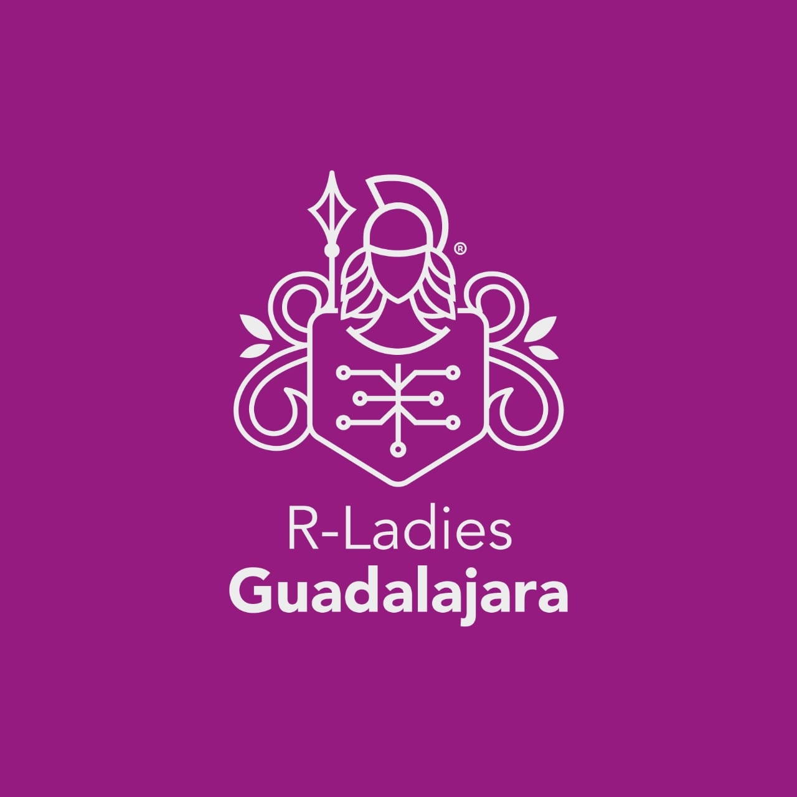

Bienvenidxs
Hola empezaré a contarles sobre mí
Servicios

Co-oeganizadora R-Ladies GDL
R-Ladies es un grupo global enfocado en grupos de difusión del lenguaje de programación R.
leer másHola empezaré a contarles sobre mí
R-Ladies es un grupo global enfocado en grupos de difusión del lenguaje de programación R.
leer más